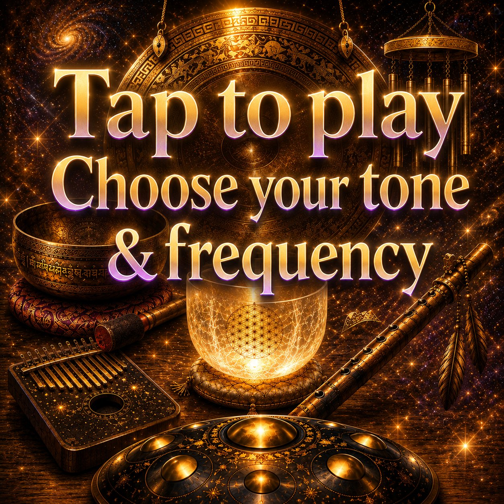

Sleep & Relaxation
How to Stop Overthinking at Night
You finally get into bed, turn off the lights, and then your brain decides it's the perfect time to replay conversations, solve tomorrow's problems, and imagine every possible worst-case scenario.
If this sounds familiar, you're not alone. Nighttime overthinking is one of the most common barriers to falling asleep. While your body may be tired, your mind remains active, making it difficult to relax and drift into sleep.
Fortunately, there are practical ways to interrupt mental loops and create conditions that support relaxation. Two of the most effective tools are guided breathing and calming soundscapes.

Free to build, no download required.
Why Overthinking Gets Worse at Night
During the day, your attention is occupied by work, conversations, tasks, and activities.
At night, external distractions disappear.
Without those distractions, your brain suddenly has more space to focus on:
- Future worries
- Unfinished tasks
- Embarrassing memories
- Relationship concerns
- Work stress
- Life decisions
Sleep experts often refer to this as a state of cognitive arousal, where the mind remains highly active when it should be winding down.
At the same time, stress can activate physiological responses such as increased heart rate, muscle tension, and faster breathing, making it even harder to relax.
The Mental Loop That Keeps You Awake
Overthinking often creates a self-reinforcing cycle:
- You begin thinking about something stressful.
- Your body becomes more alert.
- You notice you're still awake.
- You become frustrated.
- New thoughts appear.
- Sleep feels even further away.
The longer this continues, the harder it can be to transition into a relaxed state.
Breaking the loop requires shifting attention away from racing thoughts and toward something predictable and calming.
Why "Just Stop Thinking" Doesn't Work
People often tell themselves:
- "I need to stop thinking."
- "I have to fall asleep now."
- "Why can't I relax?"
Unfortunately, trying to force thoughts away often makes them feel stronger.
The brain responds better when attention is gently redirected toward a simple sensory experience.
This is where breathing and sound can help.
How Breathing Interrupts Overthinking
Breathing provides something concrete to focus on.
Instead of replaying thoughts, you focus on:
- Inhale
- Exhale
- Rhythm
- Movement
Research has shown that structured breathwork practices can improve mood and reduce physiological arousal. Controlled breathing exercises may also help reduce stress and support relaxation responses.
When you follow a slow breathing pattern, your attention naturally shifts away from mental noise and toward physical sensations. Prefer a guided visual rhythm to follow? You can pair your soundscape with Breathing Loader for a complete evening routine.
How Sound Helps Quiet a Busy Mind
Silence isn't always relaxing.
For many people, silence creates space for more thinking.
A carefully designed soundscape provides a gentle focus point for the brain.
Popular sleep sounds include:
- Rainfall
- Ocean waves
- Forest ambience
- Wind sounds
- Soft instruments
- Brown noise
- White noise
Research suggests that continuous background sounds may help reduce the impact of disruptive noises through a process called sound masking.
Many people also find that ambient sounds make it easier to maintain focus on rest rather than worries.
Why Breathing and Sound Work So Well Together
Breathing and sound address two different parts of the overthinking cycle.
Breathing helps
- Focus attention
- Slow mental activity
- Create a calming rhythm
Sound helps
- Reduce environmental distractions
- Provide a soothing atmosphere
- Prevent silence from becoming mentally stimulating
Together, they create a more immersive relaxation experience. Rather than fighting thoughts, you gently guide your attention toward breathing and sound.
"The goal isn't to eliminate every thought — it's to give your mind something calmer to hold onto."
Build Your Perfect Nighttime Atmosphere
Everyone relaxes differently.
Some people prefer ocean waves, light rainfall, brown noise, wind chimes, or soft meditation instruments. Others prefer deep ambient drones, nature sounds, white noise, or forest environments.
The best sleep environment is the one that feels calming to you — which is exactly why a one-size-fits-all playlist rarely works as well as something built around your own preferences.
Create Your Personal Sleep Ritual with Soundscape Creator
With Soundscape Creator, you're not just picking a pre-made track — you can actually build and shape your own nighttime atmosphere from the ground up. Inside the tool you can:
Instead of getting trapped in mental loops, you can simply press play, adjust the layers until they feel right, and let your attention settle naturally into the sound you built yourself.
Play, loop, tune your frequency, and record — all in your browser.
Stop Fighting Your Thoughts and Redirect Them Instead
The goal isn't to eliminate every thought.
The goal is to give your mind something more calming to focus on.
Breathing provides the rhythm. Sound creates the atmosphere. Together they help create the conditions for sleep.
When overthinking keeps you awake, don't rely on willpower alone. Use guided breathing and an immersive, personally built soundscape to create a calmer bedtime experience.
Frequently Asked Questions
Why does overthinking get worse at night?
During the day your attention is occupied by work, conversations, and tasks. At night those distractions disappear, so the mind has more room to replay worries, unfinished tasks, and future what-ifs. Sleep experts call this cognitive arousal, a state where the mind stays highly active when it should be winding down.
Why doesn't "just stop thinking" work?
Trying to force a thought away often makes it feel stronger. The brain responds better when attention is gently redirected toward a simple sensory experience, like a breathing rhythm or a calming sound, rather than fighting the thought directly.
Can background sound really help me fall asleep?
Silence isn't always relaxing, since it can leave room for more thinking. A steady background sound gives the brain a gentle focus point and can help mask disruptive noises through a process known as sound masking, making it easier to settle into rest.
Sources and References
This article is intended for educational purposes and is based on established practices commonly used in sleep hygiene, mindfulness, and stress-management programs. Scientific research has shown that controlled breathing and background sound may help reduce stress, anxiety, and physiological arousal that interfere with sleep.
- National Center for Complementary and Integrative Health (NCCIH): Stress and Relaxation Techniques.
- Balban et al. (2023), Cell Reports Medicine: Brief Structured Respiration Practices Enhance Mood and Reduce Physiological Arousal.
- Bentley et al. (2023), Brain Sciences: Breathing Practices for Stress and Anxiety Reduction: Conceptual Framework of Implementation Guidelines Based on a Systematic Review.
- Harvard Health Publishing (2025): Can White Noise Really Help You Sleep Better?
- Brown Noise for Sleep: What the Science Actually Says (2026).
- Cleveland Clinic: How Box Breathing Can Help You Destress.